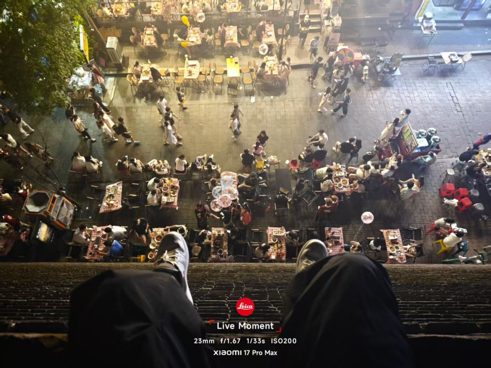
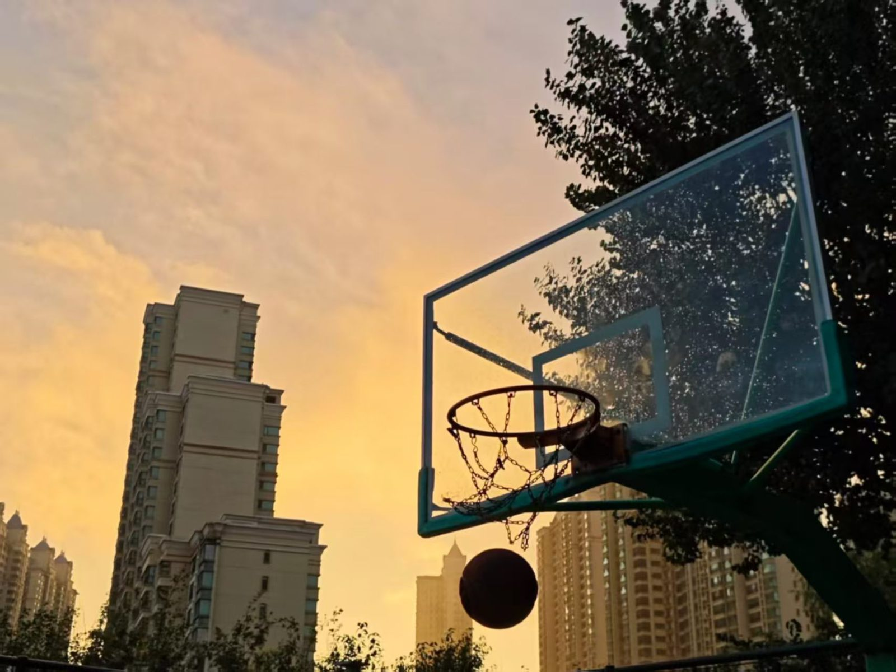
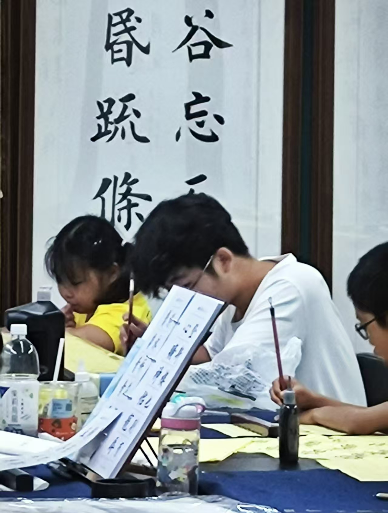
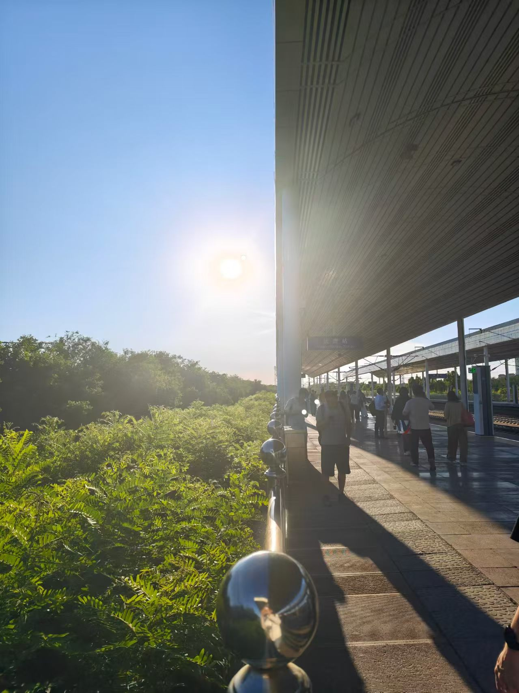
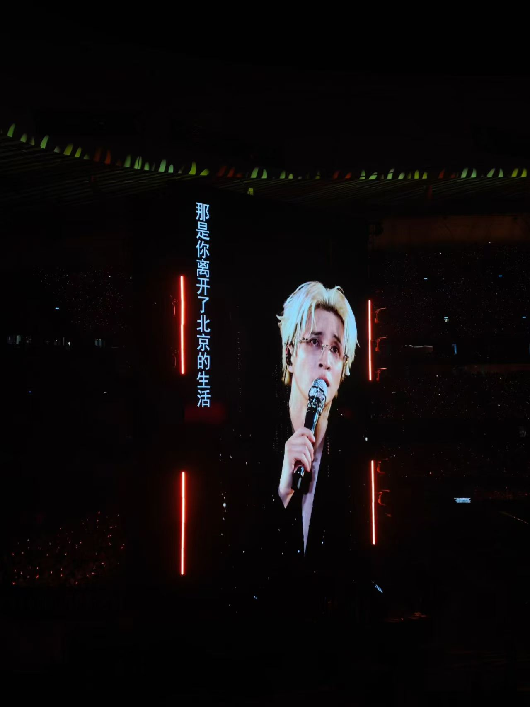
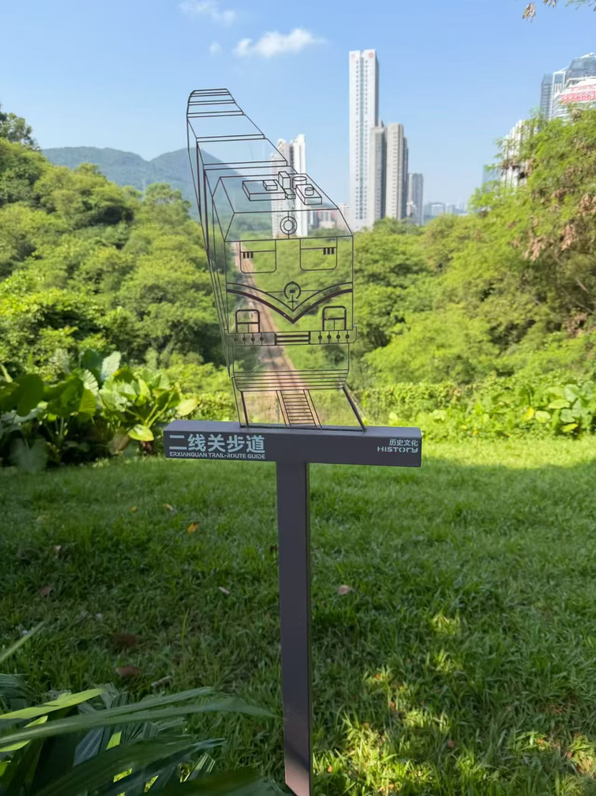
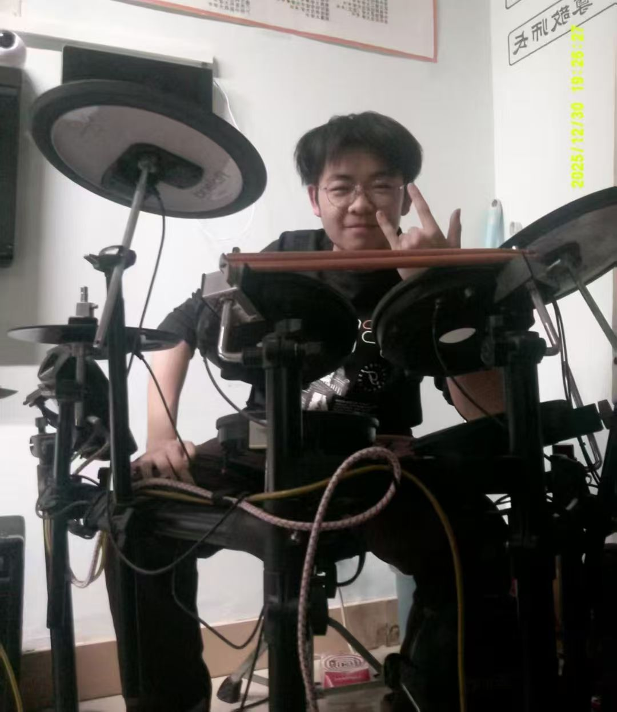
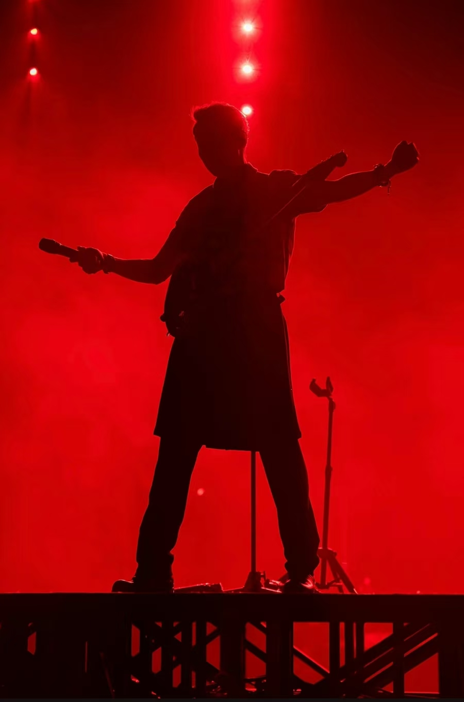

DAILY PICKS
今日推荐
AS OF 2026-09-28
00 WANG SHIXIAN · MYPAGE
- 01世界中心 — 胡彦斌66
- 02爱在 — 方大同225
- 03芳草地 — 陈粒101
COUNT:3
PICKED: 2026-09-28 · 选自备选池 276 首
EDITED BY: 释贤
THANK YOU FOR LISTENING
理解变化与极限
向量、矩阵与空间
从零动手做东西
纯静态 · 无框架 · 自己的一套设计系统
V1 → V1.1 → V2.0 → V2.7 → V3.0 · 截至 2026-09-28 共 116 次提交
这个页面是怎么做出来的 →AI for Science
自学
AI × BCI（脑机接口）—— 探索心智与机器如何相连，跟着这个领域的前沿走。








DAILY PICKS
AS OF 2026-09-28
00 WANG SHIXIAN · MYPAGE
COUNT:3
PICKED: 2026-09-28 · 选自备选池 276 首
EDITED BY: 释贤
THANK YOU FOR LISTENING
最近几天
它只知道我告诉过它的事——不知道的时候，它会直说。
反馈不会公开，只有我能看到
后台还没接入——现在提交只是走一遍界面，不会发给任何人。
已经进到我的后台，只有我能看到。下一轮迭代我会一条条读。